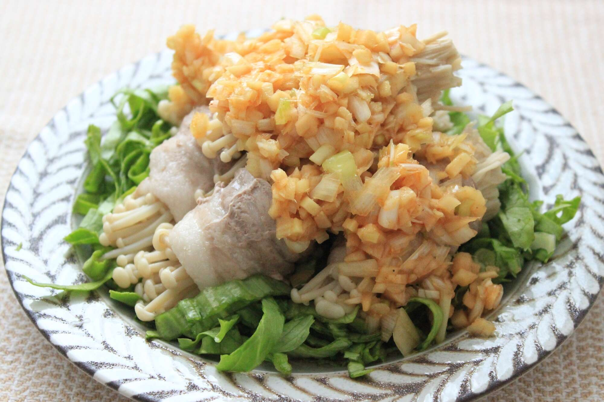

即将到来的季节，炎热的天数增加，疲劳感更容易累积。您想从现在开始获得适当的营养，为盛夏的到来做好准备。
《三分钟烹饪》六月号的开篇特辑是“丰盛的小菜配上高性价比的蔬菜”。其中最吸引我的就是“微波炉蒸金针菇肉卷”。这是一道既省钱又省钱的配菜，因为它可以在微波炉中烹饪，无需使用火。蘑菇健康，含有大量膳食纤维，而且价格全年稳定，因此是日常饮食中的绝佳食材。
尤其是金针菇富含维生素B1，与富含维生素B1的猪肉搭配，非常适合在即将到来的季节消除疲劳。所以，我决定立即尝试制作。

撒上辣椒酱
「微波炉蒸金针卷」
材料(2人份)
金针菇...（大）1袋（200克）
五花肉（涮锅用）...8块（80克）
盐....1/4茶匙
胡椒粉……一点点
辣酱
葱花...1/4 颗 (20g)
姜末...1块
酱油、醋……各一汤匙
糖......2茶匙
芝麻油...1茶匙
山椒粉、辣椒油……各一点
生菜...适量
如何制作
1 将金针菇切成8等份，去掉根部。将生菜切成一口大小的块，放入碗中。
2.将一块猪肉竖放，横放1/8的金针菇，将肉卷成螺旋状。用同样的方法制作8块，撒上盐和胡椒粉。
3. 将 2 个面包卷一端朝下放在耐热盘上，松松地盖上保鲜膜，然后用微波炉（600W）加热约 4 分钟。放入碗中，与辣酱的配料混合。
◇ ◇ ◇
通过将多汁的五花肉与健康的金针菇和生菜相结合，我们创造了一种精致的平衡，既能填饱肚子，又不会太重。酱汁是用花椒和辣椒油调制而成，充满了蔬菜的鲜味，清爽无比，姜葱的脆脆口感让人无法抗拒！将热气腾腾的肉卷放在上面，生菜就得到了恰到好处的热量，再加上花椒和辣椒油的调味蔬菜酱，真是绝配！可以一口气吃完，吃到最后也不会觉得无聊。姜和葱的脆脆口感也是一大亮点，令人难以抗拒。
在盛夏来临，您开始感到疲倦之前，最好使用这些容易恢复疲劳的配菜来增强体力。我也会回来的！
烹饪/月雫撰